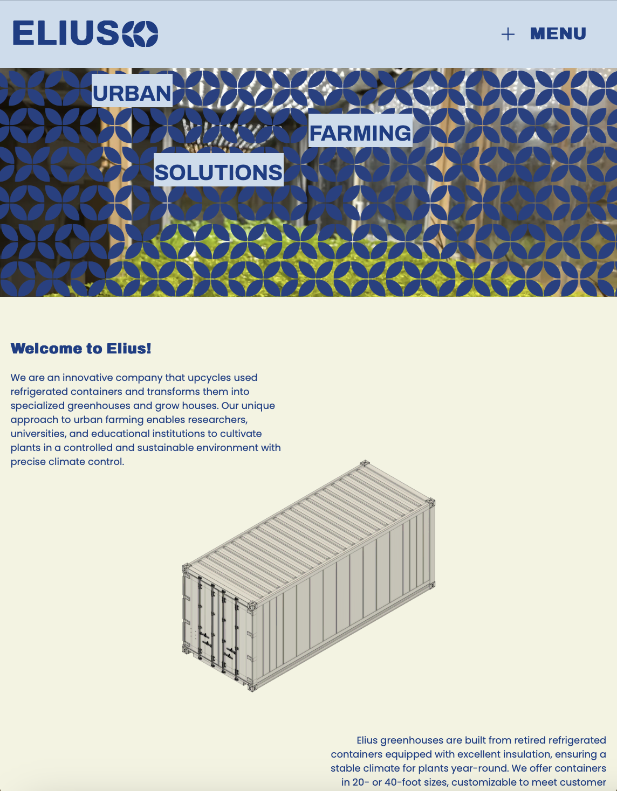
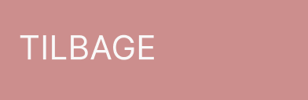

<!DOCTYPE html>
<html lang="en">
  <head>
    <meta charset="UTF-8" />
    <meta name="viewport" content="width=device-width, initial-scale=1.0" />
    <meta name="robots" content="noindex" />
    <link rel="stylesheet" href="css/style.css" />
    <link rel="stylesheet" href="css/layout.css" />
    <title>Index</title>
  </head>
</html>
<body>
  <header>
    <div class="button-container">
        <a href="ommig.html" class="button">Om mig</a>
        <a href="cv.html" class="button">CV</a>
        <a href="projekter.html" class="button">Projekter</a>
        <a href="kontakt.html" class="button">Kontakt</a>
      </div>
    <div class="logo-container">
      <a href="index.html" class="button-link"></a>
    </div>
  </header>
  <main>
    <h1 class="overskrift">TEMA 5 - Grundlæggende indhold</h1>
    
    <section class="grid_1-1-900">

      <div class="yt1">
        <iframe width="470" height="315" src="https://www.youtube.com/embed/AUDmj0gHo9s?si=85dGO3smH-nXfamb" title="YouTube video player" frameborder="0" allow="accelerometer; autoplay; clipboard-write; encrypted-media; gyroscope; picture-in-picture; web-share" referrerpolicy="strict-origin-when-cross-origin" allowfullscreen></iframe>
      </div>
      <div class="p"><p>
        I tema - 5 har jeg arbejdet med at opbygge en solid forståelse af indholdsproduktion og fået praktisk erfaring med flere kreative og tekniske værktøjer. Jeg har lært grundlæggende teknikker inden for både optagelse og redigering af video og lyd, hvor jeg anvendte Adobe Premiere Pro til at skabe professionelle og sammenhængende medieproduktioner. Desuden har jeg arbejdet med at skabe animeret vektorgrafik, som gav mig en bedre forståelse af, hvordan animationer kan bruges til at forbedre visuel kommunikation og engagement.
      </section>
      </p>
      <p class="videre">Det færdig resultat af video interviewet med "The knife guy" kan ses ovenover! </p>
    </div>
    <section class="grid_1-1-900">

      <div class="elius">
        <a href="http://johanneøa.dk/Elius/Elius-website/indexelius.html" target="_blank">
          
        </a>
      </div>
      <div class="p">
        <p class="p______">
          For at udvide mine kompetencer inden for webdesign har jeg også fokuseret på, hvordan man strukturerer, organiserer og præsenterer indhold på en måde, der er både funktionel og æstetisk tiltalende. Som en del af dette forløb redesignede jeg en virksomheds hjemmeside, hvor jeg integrerede moderne designprincipper og brugeroplevelse som centrale elementer. Samtidig udviklede jeg et passionssite, der gav mig mulighed for at kombinere forskellige medier, såsom video, fotografi og animationer, for at formidle en historie på en kreativ og engagerende måde.
          
          Dette tema har givet mig en bred vifte af værdifulde færdigheder inden for både medieproduktion og webdesign. Jeg har ikke kun lært at bruge værktøjer og teknologier mere effektivt, men også fået en dybere forståelse for, hvordan forskellige medieelementer kan sammensættes for at skabe en sammenhængende og meningsfuld brugeroplevelse. Disse erfaringer er blevet en vigtig del af min udvikling som multimediedesigner og har styrket min evne til at kombinere kreativitet med tekniske løsninger.
        </p>
      </section>
        <p class="videre">
          Tryk på billedet ovenover og gå direkte til sitet og se resultatet af Elius nye hjemmeside!
        </p>
      </div>
      
    <div class="tilbageknap">
        <a href="projekter.html" class="button-link"></a>
      </div>
  </main>
  <footer>
    <div class="footer">
      <p>Johanne Ørskov Andresen<span class="designer"> // Portfolioeksamen 2025</span></p>
    </div>
    <a href="index.html" class="button-link"></a>
</div>
  </footer>
</body>
